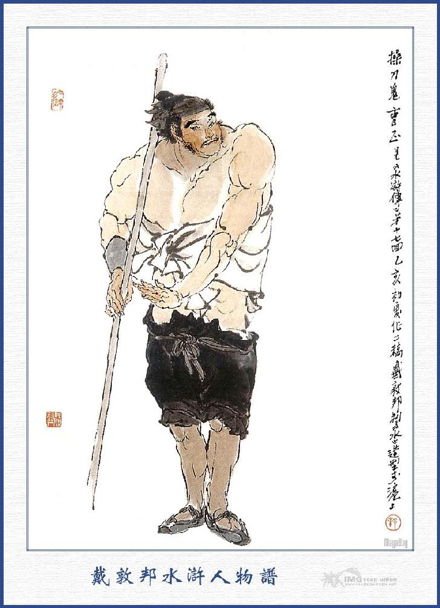
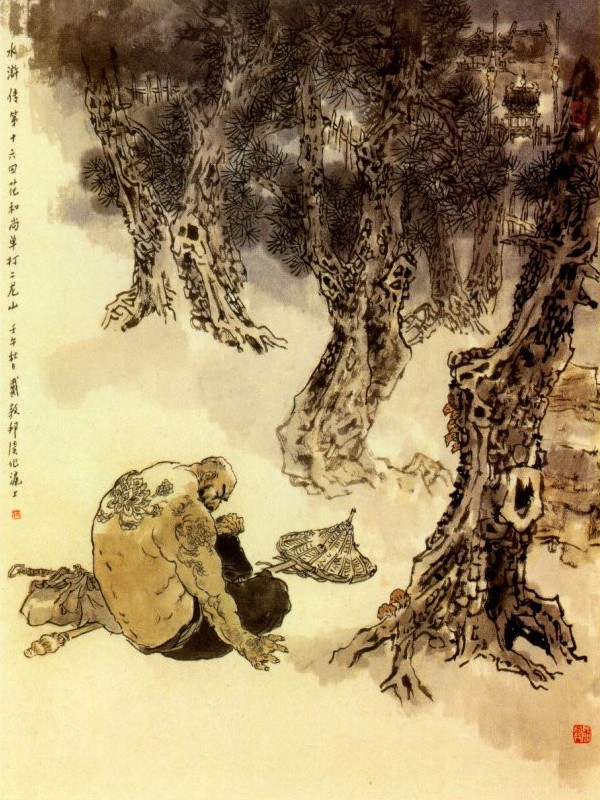
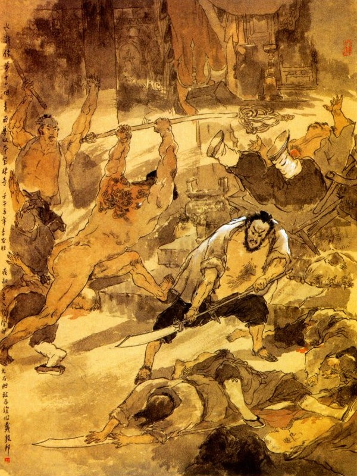
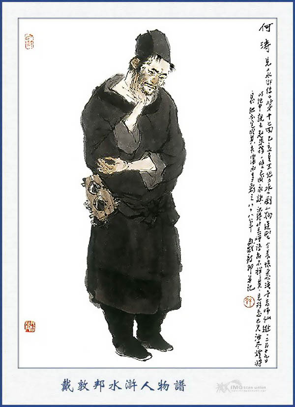

Bấy giờ Dương Chí đương bực mình nóng tiết, chạy ra bên cạnh đồi co cẳng định nhảy xuống để tự tử, chợt lại tỉnh ngộ mà nghĩ lại rằng:
- Cha mẹ sinh ra ta, đường đường một đấng nam nhi, sức dài vai rộng, võ giỏi tài nhanh thế mà quanh quẩn không làm được một việc gì bổ ích cho đời, nay lại hoài thân đến đây tự tử thì thực là uổng công cha mẹ sinh thành mà sống bấy nhiêu lâu cũng là vô chuyện. Chi bằng ta hãy nấn ná ở đời để xem cơ hội ra sao rồi ta hãy liệu.
Tiểu nhơn sống lắm cũng thừa
Anh hào chết vội cũng chưa đáng đời
Còn non còn nước còn người
Lẽ đâu phó mặc đất trời cho cam.
Dương Chí nghĩ vậy quay trở vào bên cạnh chỗ mấy người nằm, thấy anh nào cũng mở mắt trao tráo nhìn lên Dương Chí mà không sao cựa dậy được, chàng liền trỏ vào mặt mà mắng rằng:
- Chỉ tại chúng bây đồ khốn nạn ngu si, không nghe lời ta nói, gây nên cơ hội thế này để cho liên lụy đến ta, thực chúng bây không còn trách ai được nữa.
Nói đoạn lại dắt dao găm vào lưng rồi vớ lấy thanh đao, tần ngần đứng lặnh nhìn bốn xung quanh một lúc rồi thở dài mà lững thững đi xuống dưới đồi.
Lênh đênh ngọn núi chân đồi
Ai làm cho khách anh tài gian truân!
Bọn lão Đô Quản cùng mười một tên cấm quân kia nằm lăn lóc mãi đến mấy trống canh mới tỉnh dậy, anh nào anh nấy nhìn nhau mà tưng hửng cả người, chỉ rền rĩ trông trời kêu khổ. Lão Đô Quản mắng chúng rằng:
- Chỉ vì các anh không nghe lời Dương Chí thành ra làm khổ cả đến ta, bây giờ còn biết làm sao được nữa?
Chúng nói với lão Đô Quản rằng:
- Lão già ơi: Bây giờ sự thế đã ra thế, chúng ta phải liệu mà thương lượng thế nào cho xong chuyện mới được?
- Các anh nghĩ thế nào?
- Cái này thì quả là lỗi tại chúng tôi thực, nhưng cố nhân đã nói! "Lửa cháy đến nơi, có thân phải tháo, ong bám vào áo, phải cởi cho mau". Bây giờ nếu có Dương Đề Hạt ở đây thì chúng ta không còn nói năng chi nữa. Song Đề Hạt đã bỏ chúng ta mà đi mất rồi, thì khi về tới phủ ta đổ hết cho ông ta, kêu là khi đi đường ông ta bức bách đánh nhiếc làm cho chúng ta không thể đi được, rồi lại thông đồng với bọn cướp lấy đi các đồ kim ngân châu bảo, như thế có tiện không?
Lão Đô Quản gật gù khen phải và bảo chúng rằng:
- Ta hãy đợi đến sáng mai vào trình Quan Tư bản sứ, và để Ngu Hầu ở đấy nghe xem công việc rồi ta sẽ về Bắc Kinh báo với Quan Lưu Thủ để bẩm vào quan Thái Sư và sức cho quan phủ Tế Châu truy nã bọn cướp, thế mà tiện nhất. Chúng bàn định đâu đấy rồi sáng hôm sau dậy sớm cùng đi với nhau.
Gớm quân mặt nạc đóm dầy
Làm không nổi việc còn hay hại người
Công to việc lớn trên đời
Xưa này tan nát tại thời tại ai?
Còn về phần Dương Chí tay vác thanh đao lủi thủi một mình đi xuống dưới đồi Hoàng Nê rồi thẳng trông về phía Nam, mãi đến nửa đêm mới tìm một chỗ khu rừng để nghỉ. Bốn phương non nước mịt mù, bạn bè không có, tiền nong cũng hết, một mình vơ vẩn, chưa tính con đường lui tới ra sao? Sáng hôm sau chàng trở dậy thực sớm, để đi cho mát. Đi được hơn hai mươi dặm đường, nghe trong mình mệt nhọc đói khát, rất là khó chịu, chợt trông thấy bên đường có một hàng rượu, mà sờ lưng không đồng nào, chàng liền nghĩ ra một kế để vào đó để mà uống rượu ăn cơm. Khi vào tới nơi, Dương Chí tìm chỗ ghế ngồi dựng thanh đao vào một bên, rồi có người đàn bà ra hỏi rằng:
- Ngài muốn xơi cơm rượu gì?
Dương Chí đáp:
- Cho tôi hai chai rượu, rồi lấy gạo, thổi cơm, có thịt cá gì mang ra đây một thể.
Người đàn bà sai tên đầy tớ rót ra hai chai rượu rồi quay ra thổi cơm xào thịt mang lên. Dương Chí ăn uống xong rồi, vác thanh đao đứng lên đi thẳng ra cửa, mà không nói năng gì cả. Người đàn bà thấy vậy ra hỏi rằng:
- Tiền cơm tiền rượu ông đã trả đâu?
Dương Chí đáp:
- Hãy để cho tôi chịu, tôi đi thẳng đằng này một lát, rồi lại trả ngay.
Nói xong bước rảo cẳng đi luôn. Tên đầy tớ thấy vậy chạy theo nắm Dương Chí lại. Dương Chí đánh cho một đấm ngã lăn xuống đất, rồi người đàn bà kêu ầm ĩ cả lên. Dương Chí cứ mặc kệ, lặng yên mà đi. Chợt thấy đằng sau lưng có tiếng người kêu gọi lên rằng:
- Thằng kia mày chạy đi đâu?
Dương Chí quay cổ lại xem, thấy một anh chàng to béo cổi trần, vác gậy đuổi theo đằng sau, chàng liền đứng dừng lại mà không chạy nữa. Đoạn rồi lại thấy tên đầy tớ cùng hai ba đứa trang khách cũng vác gậy, chạy răm rắp mà đổ xô theo đến. Dương Chí nghĩ thầm "Đánh chết một thằng đầu này, tất là chúng không dám đến nữa". Liền múa đao xông lại để đánh với anh kia. Anh kia cũng giơ gậy lên đánh lại. Hai bên đấu nhau được đến hai ba mươi hiệp, song sức anh kia không thể nào địch nổi với Dương Chí, chỉ quanh co che đỡ cũng không xong. Bấy giờ tụi đầy tớ người nhà đã toan xông vào cả một lượt để đánh Dương Chí, thì bỗng thấy anh chàng kia nhảy ra ngoài vòng mà kêu lên rằng:
- Khoan tay, bác là ai, nói tên tuổi cho tôi biết?
Dương Chí vỗ bụng đáp:
- Ta đây đi không đổi tên, ngồi không đổi họ, Thanh Diện Thú Dương Chí chính là ta.
Người kia hỏi:
- Có phải Dương Chế Sứ ở Điện Tư Phủ bên Đông Kinh đó không?
Dương Chí đáp:
- Làm sao ngươi lại biết đến tên ta? Chính ta là Dương Chí đây.
Anh chàng kia vội vất gậy ra, rồi cúi xuống lạy mà rằng:
- Chúng tôi thực là có mắt mà không trông thấy núi Thái Sơn, xin ngài tha lỗi.
Dương Chí chạy lại đỡ người kia dậy mà rằng:
- Ông là ai? Tôi không được biết.
Người kia đáp:
- Tên tôi là Tào Chính, người ở phủ Khai Phong, là học trò Giáo Đầu Lâm Xung khi trước. Nguyên nhà tôi ngày xưa chuyên nghiệp đồ tể, sau tôi cũng thiện nghệ về mặt sát sinh, nên ai cũng gọi tôi là Thao Đao Quỷ. Mới đây có một ông Tài Chu giao cho tôi năm nghìn quan tiền đem sang Sơn Đông buôn bán, bất đồ thua lỗ mất cả, thành ra không dám về nhà, mà lần lữa lấy vợ ở đây, người rót rượu lúc nãy là em vợ tôi đó. Tôi được gặp Chế Sứ thực là may mắn, vừa rồi tôi trót lỡ mạo phạm đến ngài, mới biết thủ đoạn của ngài thực là tài giỏi, không khác gì Lâm sư phụ, chúng tôi không thể nào mà địch được?

TÀO CHÍNH
Dương Chí nói:
- Té ra anh là học trò Lâm Giáo Đầu mới bị Thái Úy hãm hại, phải đổi nghề đi lạc thảo, hiện bây giờ ở Lương Sơn Bạc đó.
Tào Chính nói:
- Chúng tôi cũng được nghe láng váng như thế song chưa biết đích xác ra sao? Xin đón Chế Sứ hãy vào chơi tạm trong hàng đã.
Nói đoạn mời Dương Chí vào ngồi chơi trong hàng gọi vợ và em vợ ra bái kiến rồi nhất diện sai làm rượu khoản đãi. Khi ngồi uống rượu, Tào Chính hỏi Dương Chí rằng:
- Chế Sứ vì cớ gì mà lại đi đến đây?
Dương Chí liền đem chuyện từ khi đánh mất Hoa Thạch Cương, cho tới khi đánh mất các đồ lễ vật của Lương Trung Thư, nói cho Tào Chính nghe một lượt. Tào Chính nghe vậy liền nói rằng:
- Nếu thế thì xin ngài hãy ở tạm đây trong ít bữa, rồi bàn định việc sau.
Dương Chí đáp rằng:
- Bác có lòng tiếp tôi thế, tôi cũng lấy làm cảm tạ lắm, song chỉ e Quan Tư truy nã đến nơi, ở đây lâu có điều không tiện!
- Vậy thì ngài định đi đâu bây giờ?
- Tôi định đi sang Lương Sơn Bạc tìm Lâm Giáo Đầu một thể. Dạo trước tôi đi qua đấy, gặp ngay ông ta xuống đánh nhau với tôi một lúc, rồi sau Vương Luân thấy võ nghệ hai người đều khá cả liền mời lên chơi rồi định lưu giữ ở trại, vì thế nên tôi nhận biết Lâm Giáo Đầu ngay từ độ đó. Bấy giờ Vương Luân đã có ý bảo tôi ở lại; Song tôi nhất định không chịu làm nghề lạc thảo, tới nay trên mặt đã phải thích kim ấn mà lại gặp bước thế này, nên phải liều mà định đi đến đấy, nhưng nghĩ ra thì cũng là bất đắc dĩ lắm, bởi thế nên tôi vẫn còn phân vân chưa quyết ra sao?
- Ngài nói cũng có lẽ, tôi cũng thấy nhiều người nói rằng: Vương Luân là một anh hẹp hòi không có độ lượng gì, ngày trước sư phụ tôi đến đấy cũng bị anh ta bắt hành bắt họe mãi rồi mới chịu dung, nhưng thế thì những người chí khí chịu sao cho được. Nay ở gần đây về hạt Thanh Châu có một trái núi gọi là núi Nhị Long Sơn trên có ngôi chùa gọi là Bảo Châu, địa thế cũng đẹp đẽ, mà chỉ có một lối là đi lên núi được. Xưa nay có một người tên là Kim Nhỡn Hổ Đặng Long trụ trì ở đó, nhưng mới đây anh ta đã phá giới mà để tóc và tụ họp đến 4, 5 trăm lâu la để cướp bóc kiếm ăn. Vậy Chế Sứ có ý muốn đi lạc thảo, thì chi cho bằng đến đó tiện hơn?
Dương Chí nghe nói cả mừng mà cảm ơn Tào Chính. Tào Chính lưu Dương Chí ngủ lại ở đấy một đêm. Đến sáng hôm sau nhờ Tào Chính cấp đỡ cho một ít hành lý, rồi từ tạ mà đi sang núi Nhị Long. Cho hay:
Có ăn mới biết ớt cay
Có từng trải lắm mới hay mùi đời
Cao lang mấy kẻ ra ngoài
Quê mùa rau cháo là nơi hữu tình.
Đường đi vào khoảng gần hôm, đã trông thấy một tòa núi cao cao, Dương Chí liền nghĩ trong bụng định tìm chỗ rừng cây để ngủ một đêm, rồi sáng hôm sau sẽ lên núi. Chúng nghĩ đoạn bèn lần lần vào chỗ rừng cây ở trước mặt. Bất đồ bước chân đi vào thì bỗng giật mình đứng lại, rồi thấy có một ông sư bụng phệ, đương cởi trần để hở những nét hoa chạm ở trên sống vai và ngồi hóng mát dưới gốc cây thông. Nhà sư ấy trông thấy Dương Chí đến thì vớ lấy cây thiền trượng dựng ở gốc cây, đứng dậy quát lên rằng:

- Thằng quái nào? Mày ở đâu đến đây?
Dương Chí nghe tiếng biết là người ở Quan Tây cùng xứ với mình, liền hỏi lại rằng:
- Nhà sư ở chùa nào đến đây?
Nhà sư không nói năng chi cả, vác ngay thiền trượng sư phụ xăm xăm ra đánh ngay luôn Dương Chí.
Dương Chí tức mình mà quát lên rằng:
- Thằng trọc này vô lễ thật, để ta đánh một trận cho biết tay.
Nói đoạn múa đao vào để đánh. Đôi bên đánh nhau trong khu rừng, có tới 4, 5 mươi hiệp, mà không bên nào chịu kém bên nào. Sau nhà sư lựa thế nhảy tót ra ngoài vòng mà quát lên rằng:
- Khoan tay đã.
Bên kia Dương Chí cũng dừng tay mà lại nghĩ thầm trong bụng rằng:
- Lão sư này ở đây đến mà thủ đoạn khá lắm, có lẽ ta đây cũng khó lòng địch được hắn chắc.
Bấy giờ nhà sư hỏi Dương Chí rằng:
- Anh chàng mặt xanh kia, anh là ai?
- Ta là Đông Kinh Chế Sứ Dương Chí đây.
- Có phải là người bán đao ở Đông Kinh mà giết chết thằng Ngưu Nhị đó không?
- Không trông thấy kim ấn ở trên mặt ta đây à!
Nhà sư nghe nói cười ầm lên mà rằng:
- Tưởng là ai? Té ra là bác, sao lại gặp ở đây?
Dương Chí nói:
- Tôi hỏi khí không phải, hoà thượng là ai sao lại biết việc tôi bán đao ở Đông Kinh?
Vị hoà thượng cười mà đáp rằng:
- Tôi chính là quân quan ở Kinh Lược Lão Chung phủ Duyên An, là Lỗ Đề Hạt đây, nhân vì ba cẳng tay đánh chết thằng Trấn Quan Tây Giả, lên phải lên núi Ngũ Đài cắt tóc đi tu, sao người ta thấy tôi có thích hoa trên sống vai, cho nên thường gọi tôi là Hoa Hòa Thượng Lỗ Trí Thâm.
Dương Chí nghe nói cả cười mà rằng:
- Nếu vậy thì người cũng một hội cả chứ đâu? Trong khi giang hồ, tôi vẫn được nghe tiếng sư huynh đến tu ở chùa Đại Tướng Quốc, thế mà bây giờ sao lại gặp đây?
Lỗ Trí Thâm nói:
- Chuyện tôi dài dòng lắm, khi tôi coi vườn rau Giải Vũ ở chùa Đại Tướng Quốc gặp Báo Tử Đầu Lâm Xung bị Cao Thái Úy toan giết hại, tôi vì giữa đường thấy sự bất bình, phải đưa anh ta đến Thương Châu để cứu cho thoát nạn. Dè đâu lúc trở về hai đứa công sai lại toan hót với Cao Cầu là chúng định giết Lâm Xung ở rừng Dã Trư, nhưng bị tôi cứu mất, nên chúng không thi hành được. Nhân thế Cao Cầu đem tâm thù ghét, cấm sư cụ chùa Đại Tướng Quốc không cho tôi ở đấy và lại sai người đến để bắt tôi. Sau đó mấy đứa trong bọn du đảng đến báo cho tôi biết, tôi tức mình cho một nắm lửa đốt Giải Vũ mà trốn đi nơi khác. Khi đi quanh quẩn vẩn vơ đến một hàng rượu ở chỗ Thập Tự Pha Mạnh Châu, lại bị con mẹ đàn bà ở trong hàng ấy đánh thuốc mê, mà toan giết hại tính mạng. May sao lại có chồng hắn về nhà trông thấy tướng dạng và các đồ giới đao thiền trượng của tôi, thì lấy làm kinh ngạc, liền cứu cho sống lại và kết nghĩa anh em. Hai vợ chồng nhà ấy cũng có tiếng là hảo hán, trong đám giang hồ, người chồng tên là Thái Viên Tử Trương Thanh, vợ là Mẫu Dạ Xoa Tôn Nhị Nương đều có can đảm nghĩa khí hơn người. Tôi ở đấy được dăm hôm, nghe nói ở đây có chùa Bảo Châu trên núi Nhị Long có thể dung thân được, bèn từ giã hai vợ chồng nhà kia, mà định đến đấy để mà vào đảng. Ai ngờ những thằng ở trên núi này không chịu cho tôi ở đó, thành ra đôi bên sinh sự đánh nhau. Về sau sức nó yếu đuối, không thể nào địch nổi với tôi, liền đóng cả ba tòa cửa núi mà giữ riết ở trong nhà. Tôi tính quanh không thấy đường nào lên được, tức mình chưởi mắng suốt ngày, chúng cũng lặng yên không thằng nào thò mặt xuống, làm cho càng thêm căm giận trong lòng, chịu khoanh tay mà ngồi đợi ở đấy, chứ không có kế gì cho hả giận được?
Dương Chí nghe nói đến đó cả mừng liền dắt tay vào rừng quét chỗ đất sạch cùng ngồi nói chuyện với nhau suốt đêm. Dương Chí lại đem chuyện từ khi đánh mất đá hoa cho đến lúc gặp vợ chồng Tào Chính thế nào, kể cho Lỗ Trí Thâm nghe rồi nói rằng:
- Bây giờ chúng nó giữ chặt sơn trại không chịu mở cửa ra, thì ta ở đây cũng là vô ích, vậy bất nhược ta hãy đến nhà Tào Chính để nghỉ ngơi, và sẽ bàn định xem sao?
Nói đoạn hai người cùng ra mà tìm đến tửu điếm Tào Chính. Khi tới nơi Dương Chí trỏ Lỗ Trí Thâm bảo cho Tào Chính biết, Tào Chính lấy làm vui mừng liền sai làm rượu cơm để thiết đãi hai người, rồi cùng bàn chuyện đánh phá núi Nhị Long. Tào Chính nói:
- Nếu đám ấy mà nó đóng chặt cửa không chịu ra, thì dẫu có tới một vạn quân mã cũng khó lòng đánh nổi, không cứ là hai người. Vậy đám ấy chỉ có thể dùng mẹo mà phá mới được, chứ dùng sức thì không ăn thua.
Trí Thâm nói:
- Lúc tôi mới đến đấy còn tiếp nhau ở ngoài cửa, sao thấy hắn không chịu cho mình nhập bọn, liền đá cho một cẳng chân ngã lăn xuống đất, rồi định vào giết luôn một thể! Bất đồ bị đám lâu la chạy ùa ra cứu đem về sơn trại, rồi đóng chặt cửa lại, tha hồ cho mình mắng nhiếc ở ngoài, nhất định không thằng nào ra nữa.
Dương Chí nói:
- Chỗ ấy đã là một chỗ thú, thì hai người chúng ta cùng đến đánh lấy có được không?
Lỗ Trí Thâm lắc đầu đáp rằng:
- Không thể nào mở được cửa mà lên, thì còn làm gì được.
Tào Chính nói:
- Tôi có một kế sách này, không biết các ngài có cho là phải không?
Dương Chí nói:
- Thế nào xin cứ nói cho chúng tôi nghe.
Tào Chính nói:
- Bây giờ Chế Sứ phải ăn mặc giả làm một anh nhà quê, cũng như chúng tôi đây, đoạn rồi tôi cùng vợ và em vợ tôi với ngài đem các đồ thiền trượng giới đao, đưa hòa thượng tới cổng núi trói thòng lọng lại rồi bảo với bọn kia rằng: "Nhà tôi mở hàng rượu ở gần đây có vị hòa thượng này vào uống rượu say nhừ say nhựt mà không chịu trả tiền, mồm còn nói lảm nhảm: Định đi tìm người đến đánh phá núi Nhị Long. Tôi nghe thấy vậy liền thừa lúc hòa thượng say bắt trói đem lên để nộp Đại Vương". Như thế tất là họ mở cửa, cho ta vào. Khi tới nơi hễ gặp Đặng Long là tôi cầm đầu dây thòng lọng rút phăng ra, rồi đưa thiền trượng cho hòa thượng, để mặc hòa thượng cùng ngài đánh cho nó một mẻ, không còn trốn đi đâu được nữa, còn những tụi tẹp nhẹp bên dưới, thì thấy chủ chết là tự nhiên tất chúng phải hàng phục mình cả, kế ấy các ngài nghĩ sao? Lỗ Trí Thâm cùng Dương Chí đều vỗ tay khen là diệu kế.
Đêm hôm ấy Tào Chính sắp sửa các đồ lương thực, để đi đường và dự bị đâu đấy sẵn sàng tất cả. Sáng hôm sau cơm nước xong rồi, Trí Thâm đưa khăn gói hành lý để gửi ở nhà Tào Chính, rồi ba người cùng vợ và em vợ Tào Chính và dăm bảy người nhà nữa, cùng đi lên núi Nhị Long. Khi đi tới khu rừng gần đó, mọi người đều cởi áo bỏ xiêm, rồi lấy thừng trói thòng lọng Lỗ Trí Thâm lại, xong cắt hai tên người nhà cầm đầy thừng để rong đi, Dương Chí đầu đội nón mê, mình mặc áo vải rách, tay cầm thanh đao; Tào Chính vác cây thiền trượng của Lỗ Trí Thâm, còn mọi ngưòi kia mỗi người cầm một cây gậy, mà dắt đùm đi lên núi. Đến cửa núi đã thấy hai bên bày la liệt những cung nỏ đại giá ở đó. Mấy tên lâu la ở trên cổng thấy bọn nọ trói hoà thượng đem đến, thì vội chạy vào báo cho chủ trại biết. Được một lúc thấy hai tên đầu mục chạy ra chỗ gác bóp hỏi rằng:
- Các anh ở đâu, đến đây làm gì? Bắt được lão sư ấy ở chỗ nào?
Tào Chính liền đáp rằng:
- Chúng tôi người ở thôn gần đây, có mở một ngôi hàng để bán, bỗng thấy lão hòa thượng này đến mua rượu uống mà không chịu trả tiền, rồi lại nói khoác rằng định về Lương Sơn Bạc, rủ mấy nghìn người đến phá núi Nhị Long, và tất cả các làng xóm ở đây. Chúng tôi thấy vậy, đem rượu ngon đổ thêm cho lão uống thật say mềm rồi trói lại, đem đến đây dâng nộp Đại Vương để tỏ lòng thuận phục của chúng tôi, và trừ khỏi những tai ngại về sau nữa.
Hai tên đầu mục nghe nói mừng quớ lên mà rằng:
- Tốt lắm, các anh hãy đợi đấy, để tôi vào báo với Đại Vương.
Nói đoạn hai người chạy vội vào báo với Đặng Long, Đặng Long nghe báo cả mừng, liền sai giải lão sư lên trại để mọi ruột moi gan nhắm rượu cho hả tấm lòng tức bực. Chúng lâu la vâng lệnh, ra mở cửa cho bọn kia giải hoà thượng vào. Bầy giờ Dương Chí cùng lũ Tào Chính áp giải Lỗ Trí Thâm lên qua mấy tòa cửa, thấy đường lối quanh co, rất là hiểm trở. Hai bên núi cao quanh quất bao bọc ngọn chùa, thế núi nguy nga hùng tráng, khoảng giữa có một núi con đi vào các cửa, trên cửa bày chất các đồ cung nỏ đạn đá, cùng là gỗ súc gậy tre phòng bị rất là nghiêm mật. Khi qua ba tòa nhà, vào tới trước chùa Bảo Châu, thấy ba tòa điện ngôn ở trên một miếng đất phẳng lì như mặt kính, xung quanh chấn gỗ làm thành. Trước cổng chùa có bảy tám tên lâu la đứng gác, trông thấy bọn kia giải Lỗ Trí Thâm vào thì trỏ vào mặt mà mắng rằng:
- Thằng trọc này hôm nọ đá Đại Vương ngã, hôm nay bị bắt đến đây, gọi là xé xác ra làm trăm mảnh.
Lỗ Trí Thâm nghe vậy, cứ lặng in không nói năng chi cả. Vào tới trong điện, thấy Phật ở đấy, đều khiêng bỏ đâu mất, khoảng giữa bày một cái ghế chéo phủ gia hổ, có lũ tiểu lâu la vác roi đứng dàn hai bên. Được một lát tiểu lâu la mời Đặng Phong ra ngồi trên ghế, rồi Tào Chính cùng Dương Chí giải Lỗ Trí Thâm vào trong thềm. Đặng Long lên tiếng hỏi:
- Thằng trọc kia hôm nọ đá ta một cái đau tức bụng dưới, vẫn hãy còn sưng chưa khỏi, hôm nay hẳn có phen vào tay ta chứ.
Trí Thâm nghe nói trợn hai mắt tròn xoe mà thét lên rằng:
- Thằng khốn nạn không biết thân, còn thị hùng, mày chạy đâu được bây giờ?
Vừa nói dứt lời thì hai người nhà Tào Chính cầm dây thòng lọng, rồi rút phựt ra, cho Lỗ Trí Thâm vớ lấy cây thiền trượng ở tay Tào Chính, mà múa nhảy lên. Bên kia Dương Chí vất nón ra múa đao xông vào, rồi Tào Chính cùng mấy tên người nhà đều cầm gậy xông lên. Đặng Long thấy vậy, vừa toan đứng dậy để chạy, thì đã bị Trí Thâm đánh cho một trượng vỡ óc ra làm đôi mảnh, mà ghế chéo cũng gãy nát cả ra. Các thủ hạ lâu la, bị Dương Chí đâm chết ba bốn tên, rồi Tào Chính quát lên rằng:

- Các người mau đến mà đầu hàng, nếu đứa nào không theo thì lập tức chém hết cả bây giờ.
Khi đó năm, sáu trăm lâu la, cùng mấy tay tiểu Đầu lĩnh ở đằng trước đằng sau chùa, đều kinh sợ hoảng hốt đưa nhau đến, mà đầu hàng suốt lượt. Đoạn rồi cho đem xác Đặng Long ra đằng sau núi để thiêu hoá. Nhất diện kiểm điểm kho đụn, sửa sang nhà cửa, xem xét các đồ vật ở trong chùa, rồi mang rượu thịt ra ăn uống với nhau. Từ đó Trí Thâm cùng Dương Chí giữ quyền sơn trại, đặt tiệc ăn mừng, rồi bầu mấy tên tiểu Đầu lĩnh để cai quản đám lâu la, Tào Chính thì đưa bọn người nhà về tửu điếm.
Nước non riêng một bầu trời,
Đêm thân trí khí ra ngoài cỏ my.
Ngang tàng rõ mặt nam nhi,
Những phường luồn cúi kể chi từ rày!
Nói về lão Đô Quản cùng 11 tên Cấm binh khi ở Hoàng Nê Cương trở về tới Bắc Kinh, liền vội vàng vào trước sảnh Trung Thư, mà quỳ lạy để chịu tội. Lương Trung Thư chưa biết đầu đuôi ra sao liền hỏi rằng:
- Các ngươi đi đường nghe chừng khó nhọc lắm, nào Dương Đề Hạt ở đâu?
Chúng nghe hỏi, bèn kêu lên rằng:
- Bẩm ân tướng, người ấy là một người bội nghĩa vong ân, không biết thế nào mà nói được! Khi ở đây bước chân ra đi được dăm bảy ngày tới Hoàng Nê Cương gặp phải một hôm khí trời nòng bức, anh em tìm vào khu rừng để nghỉ, dè đâu Dương Chí thông đồng với bảy người cường đạo, giả trang làm lũ buôn táo, rồi đem bảy cổ xe Giang Châu đến đóng trước ở đó. Sau lại sai một người gánh rượu đến gạ bán cho chúng tôi, mà bỏ thuốc mê vào đánh phản. Đoạn rồi Dương Chí cùng đám kia lấy hết cả đồ kim ngân châu báu mà trốn đi đâu mất. Hiện chúng tôi đã vào trình với quan Phủ Tế Châu, và lưu hai Ngu hầu ở đó, để chờ xem tin tức, còn anh em xin về báo để ân tướng.
Lương Trung Thư nghe nói cả kinh mà mắng rằng:
- Quân chó má, nó là một tên tù tội đến đây, ta đài cử cho nó, ai ngờ lại dám lường thầy phản bạn, đang tay làm việc bất nhân bất nghĩa như thế? Nếu ta bắt được nó phen này thì tất là xé thây ra làm muôn mảnh muối cam.
Nói đoạn lập tức bảo gọi phòng giấy lên, bảo công văn hoả tốc đưa sang Tế Châu, và viết một phong thư bắt đưa ngay sang Đông Kinh, để trình cho Thái Sư được biết. Cách ít bữa Xài Thái Sư nhận được gia thư của Lưu Trung Thư đưa tới, bóc ra xem lấy làm kinh ngạc mà rằng:
- Những quân trộm cướp bây giờ to gan thật? Năm ngoái chúng đã lấy các đồ lễ vật mừng của con rể mình, đến năm nay chúng lại làm luôn chuyến nữa, như thế thì để làm sao yên được?
Liền sai thảo một đoạn công văn phái một tên thân mật trong phủ, lập tức sức cho quan Phủ Tế Châu phải bắt ngay các tên giặc cướp đó, đem về để nộp. Quan Phủ Tế Châu từ khi nhận được văn thư của Lương Trung Thư ở Bắc Kinh đưa đến, trong bụng đã lo sợ ngay ngáy chưa biết làm sao, mà liệu lý cho xong! Chợt đâu lại thấy lính vào báo rằng:
- Có người thân mật trong phủ Hoa Thái Sư ở Đông Kinh đưa công văn đến hầu.
Tri phủ nghe báo trong lòng càng kinh sợ hoảng hốt, chắc là cũng vì một việc lễ sinh nhật chi đây? Liền tức ra công đường để tiếp người nhà trong phủ Thái Sư. Bấy giờ Tri Phủ nói với người đưa giấy rằng:
- Việc này từ khi hạ quan tiếp được giấy báo của Ngu Hầu đưa đến thì đã lập tức sai người đi tróc nã cường đạo, nhưng chưa thấy tăm hơi đâu cả. Hôm nọ bên quan Lưu Thú lại sai người đưa giấy sang thôi thúc ở đây, tôi lại phải bắt Huyện úy cùng Tập bộ, Quan sát đều phải hết sức truy tầm các ngả, mà cũng chưa bắt được ai? Vậy việc này hạ quan xin hết sức truy nã, nếu hơi thấy có chút tăm hơi nào, sẽ xin vào tận tướng phủ để bẩm với Thái Sư được biết.
Người kia nói:
- Tôi đây là người nhà tâm phúc của Thái Sư, nay vâng mệnh quan Thái Sư ra đây, chỉ cốt bắt được phạm nhân, rồi cùng về một thể. Khi bước chân ra đi, Thái Sư dặn đi dặn lại, thế nào cũng phải lưu lại ở phủ đây, để quan Phủ bắt cho kỳ được bảy tên hàng táo, một tên buôn rượu và một tên quan quân bỏ trốn là Dương Chí, hạn trong mười ngày, phải giải về Đông Kinh ngay lập tức. Nhược bằng trong mười ngày mà tra cứu không ra, thì có lẽ quan lớn cũng phải ra Sa Môn Đảo một phen, còn chúng tôi cũng khó lòng về được phủ Thái Sư, mà cũng chưa biết tính mệnh ra sao nữa. Xin quan lớn xem giấy của Thái Sư đây thì biết.
Quan Phủ xem xong thì kinh sợ vô cùng, lập tức truyền gọi các viên Tập đến để bàn hỏi. Bấy giờ có một người tên là Hà Đào vâng mệnh đến trước công đường, Tri Phủ liền hỏi rằng:
- Việc bắt bọn cướp ở Hoàng Nê Cương có phải nhà ngươi đảm nhận không?
Hà Đào đáp:
- Bẩm tướng công, từ khi Hà Đào này nhận việc ấy tới nay, đêm nghĩ ngày lo; sai những người sành sỏi thạo việc, đi đến tận Hoàng Nê Cương để dò xét, hiện nay đã mấy phen đánh đập quở trách chúng, nhưng cũng chưa dò thấy tung tích đâu cả. Việc này thực chúng tôi không dám trễ nãi, song không có thể mà dò xét cho ra được.
Quan Phủ nghe nói quát lên rằng:
- Nói lạ! Trên dễ dàng thì dưới lại lười biếng, ta từ khi đỗ Tiến Sĩ đến nay, làm nên một chức Tri Phủ ở đây, cũng không phải là dung dị, thế mà quan Thái Sư còn ra lệnh đây, hạn trong mười ngày, nếu không tầm nã cho ra, thì không những mất quan, có lẽ đến đầy Sa Môn Đảo cũng nên, các ngươi đã là một người giữ chức Tuần Bộ, mà không hết sức làm việc, để cho liên lụy đến ta, vậy ta hãy đem đày các ngươi đi một xứ rất xa, nhạn bay không tới xem sao?
Nói đoạn rồi liền gọi thợ thích chữ phát vãng vào mặt Hà Đào, bỏ trống chỗ tên châu quận để điền vào sau, rồi lại thét lên mà bảo rằng:
- Nếu ngươi không bắt được đám cướp ấy, thì quyết nhiên là tội nặng đến thân, không sao tha được.
Hà Đào vâng lời Tri Phủ, rồi lủi thủi đi xuống phòng Cơ Mật bàn việc với bọn công sai. Bọn công sai thấy Hà Đào như vậy, thì anh nào anh nấy, đều tẩn mẩn như tên xuyên mỏ nhạn, câu mắc mang nheo, không còn biết nói năng sao được! Hà Đào thở dài bảo với chúng rằng:
- Mọi lúc bình thường các anh vẫn đến đây để tảo tiền, phung phí, sao đến ngày nay có việc như thế này, chỉ thấy các anh im thin thít cả, như thế là nghĩa gì? Các anh có thương đến cái kim ấn ở trên mặt tôi đây không?
Chúng đồng thanh nói rằng:
- Quan Sát ơi! Chúng tôi có phải là cỏ gỗ gì mà không biết! Nhưng khốn vì cái bọn buôn táo ấy, chẳng qua là bọn cường nhân ở nơi non xanh rừng rậm đi đâu qua tới đó, chợt thấy kim ngân châu báu thì họ cướp chia nhau, rồi lại tản về sơn trại, như thế thì còn bắt làm sao được họ! Dù cho có biết nữa, cũng chỉ đến nhìn họ mà thôi chứ gì?
Hà Đào chưa nghe thấy bọn ấy nói, thì trong bụng còn phiền não năm phần, đến khi nghe họ nói, thì lại phiền não lên gấp mười phần, rầu rĩ bước ra phòng giấy rồi lên ngựa về nhà. Khi về tới nhà dắt ngựa ra tàu buộc vào tàu ngựa, rồi một mình vơ vẩn băn khoăn rất chiều buồn bã. Người vợ thấy vậy liền hỏi rằng:
- Chẳng hay phu quân ngày nay làm sao mà buồn bã như vậy?

HÀ ĐÀO
Hà Đào thở dài đáp rằng:
- Chỉ vì cái việc tôi nói mọi hôm, là việc cướp ở Hoàng Nê Cương, nó lấy mất 11 gánh kim ngân châu báu của Lương Trung Thư mà truy tầm mãi không ra, cho nên khổ não đến mình đó thôi! Đời người nghĩ cũng éo le, như mình làm việc vua việc quan, kiếm được miếng ăn đã là vất vả, thế mà những tụi bên trên thì cao lương chung đỉnh, no béo cả họ lẫn hàng, lại còn sinh sự lễ nọ kia, những là sinh nhật với sinh thời, làm cho tự nhiên vô cố cũng náo động cả dân gian, mà phiền nhiều đến người vô tội, nào có phải là việc dân việc nước cho cam! Đây bây giờ chữ đã thích trên mặt đây, nếu nay mai không truy nã được ngay bọn cướp ấy để giải về Đông Kinh, thì tính mạng mình cũng chưa biết ra thế nào đó.
Người vợ nghe nói lắc đầu mà rằng:
- Thế thì biết làm thế nào được! Có cách gì bây giờ không?
Khi ấy vợ chồng đang than thở, bỗng thấy người em là Hà Thanh đến. Hà Đào bảo với em rằng:
- Đến đây làm gì đấy? Sao không đi đánh bạc mà lại đến đây?
Người vợ biết ý, liền vẫy Hà Thanh xuống nhà dưới, dọn cơm rượu lên, để mời Hà Thanh ăn uống. Hà Thanh có ý không bằng lòng mà rằng:
- Ca Ca khinh tôi quá! Tôi không ra gì cũng là em ruột của Ca Ca mà Ca Ca có thế nào đi nữa, cũng là anh ruột tôi, tôi có điều gì làm nhục đến Ca Ca, mà lại cho tôi ăn uống thế này?
Người chị dâu nói:
- Chú không biết, bụng anh bây giờ đương có sự không vui đấy!
- Ca Ca ngày nào cũng kiếm tiền kiếm bổng đem về đây, anh em không hề ai quấy nhiễu, còn có chuyện gì mà không vui?
- Nào chú có biết đâu, hôm nọ vì có bọn bảy người buôn táo ở Hoàng Nê Cương cướp lấy lễ vật của Lương Trung Thư, đưa vào mừng sinh nhật Xài Thái Sư ở Đông Kinh, đến nay quan Phủ Tế Châu vâng lệnh Thái Sư, ra hạn mười hôm phải bắt cho kỳ được, bằng không tất phải đi đày ở nơi khốn khổ, chú không trông thấy chữ thích ở trên mặt anh đó sao? Chú tính như thế thì còn vui vẻ gì mà uống rượu với chú thế nào được? Thôi, chú cứ xơi cơm rượu đi, đừng nên trách anh ấy nữa! Hà Thanh nghe nói thì gật gù mà đáp rằng:
- Phải, tôi có nghe loáng thoáng thấy họ nói có việc cướp ấy, nhưng không biết đích xác rằng nó cướp ở đâu?
- Ấy chính ở Hoàng Nê Cương đấy!
- Thế thì bọn cướp ấy là bọn thế nào?
- Chú say rượu sao? Tôi vừa nói với chú là bảy người họ buôn táo đó mà.
Hà Thanh nghe nói cười ha hả mà rằng:
- Tưởng là ai, chẳng ra là bọn buôn táo đó. Nếu vậy việc gì mà phiền? Sao không sai người đi để bắt?
- Chú nói thế thì cũng phải lắm, nhưng bắt ở đâu được mà bắt?
Hà Thanh lại cười mà đáp:
- Tẩu Tẩu lo làm gì? Mọi lúc binh thường Ca Ca vẫn năng đi lại với bọn rượu chè cá thịt mà không biết đến anh em, cho nên đến lúc hữu sự mới không biết đâu mà bắt được. Ví bằng mà mọi khi Ca Ca lại thỉnh thoảng cho anh em được chén rượu, thì bọn cướp ranh ấy làm gì mà truy nã không ra?
Vợ Hà Đào ngạc nhiên mà hỏi rằng:
- Vậy chú có biết đường lối của họ không?
Hà Thanh cười rằng:
- Thôi cứ để Ca Ca khi nào nguy hiểm đến nơi, bấy giờ sẽ liệu có cách gì cứu được hay chăng?
Nói xong đứng dậy toan đi, vợ Hà Đào cố giữ lại mời uống mấy chén rượu, rồi chạy ra bảo cho chồng biết. Hà Đào nghe vợ nói, liền chạy vào mà bảo em rằng:
- Em biết tụi giặc ấy ở đâu, sao không cứu giúp ta?
Hà Thanh đáp:
- Tôi có biết đâu, tôi nói chuyện đùa cho vui đấy thôi, em cứu thế nào Ca Ca mà cứu?
- Thôi, sao em lại lãnh đạm như thế, em phải biết bụng ta đối với em là tử tế, chớ nên nghĩ đến những điều nọ tiếng kia, mà cứu lấy tính mạng cho ta mới được.
- Ca Ca thiếu gì những người làm việc mắt nhanh tai sáng, xưa nay có kể đến hai ba trăm người, lại không giúp đỡ được Ca Ca hay sao?
- Em ơi! Em đừng nói như thế, em biết đường lối rồi, can chi còn phải nhường ai? Em cứ báo cho ta biết rồi ta sẽ có cách đền ơn em, đừng sợ thiệt.
- Tôi biết gì mà bảo cho Ca Ca?
Hà Đào lại nói:
- Em không nên chọc tức ta, em phải nghĩ tình máu mủ mới được.
Hà Thanh đáp:
- Nhưng mà cũng không vội gì, cứ để đến lúc nguy sắp bấy giờ tôi sẽ bảo anh, để bắt bọn cướp ranh ấy.
Vợ Hà Đào nghe vậy liền bảo rằng:
- Chú ơi! Chú phải nghĩ đến tình cốt nhục mà cứu anh mới được. Hiện Thái Sư sức giấy ra truy nã phạm nhân, việc ấy là việc to tày trời, sao lại gọi là bọn cướp ra được?
Hà Thanh cười ngất mà nói:
- Tẩu tẩu ơi! Tẩu tẩu không biết, tôi đây chỉ vì đánh bạc, mà bị Ca Ca đánh mắng đã bao phen, cho nên chỉ sợ Ca Ca mà không dám can thiệp đến. Mọi khi có rượu có thịt thì chỉ vui thú với những ai ai, mà tới nay có việc mới biết anh em đấy nhỉ?
Mới hay:
Khi vui vui những đâu đâu,
Tới khi hoạn nạn mới cầu anh em.
Ai ơi! Thử ngẫm mà xem,
Nhân tình như thế bạc đen chăng đời?
Hà Đào nghe Hà Thanh nói có ý phẫn uất, liền lấy ra mười lạng bạc để lên mà bảo rằng:
- Em hãy cầm lấy món tiền này tiêu tạm, rồi sau khi bắt được cướp anh sẽ hậu thưởng cho.
Hà Thanh cười mà đáp rằng:
- Ca Ca thực là. Nếu tôi lấy món tiền này chẳng hóa ra tôi bắt chẹt Ca Ca hay sao? Không nên lấy tiền mà nhử tôi, nếu Ca Ca làm thế, thì không khi nào tôi nói nữa. Có phải là Ca Ca có lòng tử tế, thì tôi sẽ nói cho Ca Ca nghe, chứ đừng mang tiền ra mà lòe tôi như thế.
Hà Đào nói:
- Tiền ấy là của quan trên treo giải thưởng đấy, em đừng nên từ chối, hãy nói thực cho ta biết bọn ấy nó ở đâu?
Hà Thanh vỗ vào đùi mà nói rằng:
- Bọn cướp ấy, tôi đã tróc cả ở trong túi này chứ đâu?
Hà Đào kinh ngạc nói rằng:
- Em nói lạ! Làm thế nào mà bọn cướp lại ở trong túi được?
Hà Thanh nói:
- Ca Ca mặc tôi, nó ở cả trong túi tôi đây rồi, Ca Ca cứ cất tiền đi, không nên đem ra để làm mồi nưa. Mới hay:
Mấy anh phỗng đá ngồi trên,
Đã không ích nước lại thêm lụy người.
Túi tham vét sạch của đời,
Giả danh quân quốc làm mồi ấm no.
Vẽ hươu vẽ vượn trăm trò,
Chẳng hay đục nước béo cò hay chi?
Rồi đây binh biến bất kỳ,
Muôn dân đồ thán tội thì tại ai?
Lời bàn của Thánh Thán
Một bộ sách sắp vơ vét của 108 người, để chứa cả vào Sơn Bạc, mà phải đưa từng người một, vào Thủy Đình của Chu Quý, từng người vào ăn uống ở nhà hàng, từng người phải bắn tên hiệu, và từng người phải dẫn quan đò, như kẻ bán gạo lại miệng đếm tay nhặt từng hạt gạo một, thì bao giờ cho xong? Nếu chép từng người một đi đến như Lâm Xung kia, thì sao gọi là văn của tài tử chép. Xét từ khi trời sinh Thạch Kiệt, để tới ngày ghi tên họ mà xem, thì 108 người kia, đã lần lượt tới Lương Sơn Bạc vậy. Song le mới đầu đi đến Sơn Bạc kia, lần lượt diễn ra, còn ví như những hạt châu to nhỏ, chứa đựng cả vào một mâm ngọc vậy, có còn tản tác xa gần, chưa thể nhặt ngay hết để cùng được! Vì lúc đầu nào phải một tay hai tay nhặt hết để cùng bày, đối với việc ấy, tác giả tả dần dà, như bày đặt thứ tự, nhân đó mà chợt cấu tứ lạ lùng, mà nói đến hai chàng Dương, Lỗ, còn giấu ở Nhị Long Sơn, đợi sau then chốt mở ra, thừa thế mà động, như tiếng sấm vang phá vách, bay nhanh tới vậy. Hỡi ôi! Lời xưa có nói: Thợ giỏi khổ tâm, thực không sai vậy. Lỗ Đạt là một nghiệt long, Dương Chí cũng là một nghiệt long, hai con nghiệt long cùng ở một nước, thì tranh một Bảo Châu, sao cho khỏi được? Tác giả vốn biết sâu như thế, nên trước đoạn văn này, tả hai người cùng ở Quan Tây, để mong lấy tình hương lý, tuy rằng lấy hai chàng Dương; Lỗ, mà mong ở cớ cùng hương lý để hợp nhau, thì cũng khó thay! Vì rằng lấy cớ hai người Dương, Lỗ cùng một quê hương để mà hợp tác, thì sao đẻ ở Quan Tây, lại không sống chết ở Quan Tây? Lại bỏ nơi chôn rau cắt rốn mà đến đất này? Đã bỏ nơi chôn rau cắt rốn mà đến đất này, thì còn nghĩ đến hai chữ Quan Tây, để buộc nhau hợp tác, thế là đã coi thường nơi sinh đẻ, còn trói buộc sao cho nổi hai Rồng? Chuyện đâu đáng kể? Tác giả vốn biết như thế, mới bảy ra chàng Thao Đao Tào Chính, tả ra là môn đệ Lâm Xung Tào Chính như kẻ giữ thừng trong tay, kết chặt lại Dương, Lỗ, khiến hai con rồng dữ thò đầu cựa đuôi, không làm sao tháo ra bỏ được! Không là gì? Quái vật thiên hạ, phải có Quái bảo thiên hạ giữ gìn. Đọc tới hồi này, thì phải biết tới Lâm Xung làm chiếc Khóa vàng của vua Võ vậy.
Nãy ta nói trong hồi này, tuy không tả Lâm Xung, vì muốn giữ hai con Rông dữ, phải có chiếc Khóa vàng của vua Võ, sở dĩ có Lâm Xung làm người cương lãnh một hồi, bàn ra thấy rõ. Nay ta muốn hỏi thử độc giả Thủy Hử khắp trong thiên hạ, cũng từng biết trong hồi này. Vì ngưng lại hai Rồng, làm ra có Rồng (Đặng Long), vì cần một khóa, làm ra có khóa (đóng chặt sơn trại), vì cần một kẻ liên hệ, làm ra một kẻ liên hệ (Tào Chính) đó chăng? Đức Khổng nói: Nhắc đến một góc, mà không biết đem ba góc kia quay lại; thì còn nói làm gì? Thế mà ta vẫn cứ nói ra cho thấy, ôi Dương, Lỗ cả hai cùng ở chùa Bảo Châu đã rồi, ngày sau lại có Võ Tòng tới nữa, thì Lỗ Đạt đã một nghiệt long, Võ Tòng cũng một nghiệt long, Lỗ, Dương liên hệ đã có Lâm Xung, Tào Chính là tay ràng buộc; Còn Lỗ, Võ hợp nhau lấy ai liên hệ? Xét đến Lõ Đạt tự thuật việc ở Mạnh Châu đầu độc, tuy chưa thực sự, song đã một lần nói ra từ miệng Lỗ Đạt, lại một lần sau nói ra ở miệng Trương Thanh, mối liên hệ vậy, sau này Lỗ, Võ tuy chưa gặp nhau lần nào, mà rồi cả hai cùng đi đến điếm Trương Thanh, thì dây liên hệ đã ở trong tay Trương Thanh lâu rồi, vậy Trương Thanh sau đó, cũng như Tào Chính ngày nay, nói rằng Trương Thanh cũng như Tào Chính, đã thực có người liên hệ, có kẻ giữ ràng, sự thực như thế, bởi chưa đọc kỹ hết. Xem như Lỗ Đạt thuật với Trương Thanh rằng xem giới đao ta kính khiếp, đến sau Trương Thanh tặng Võ Tòng thì rằng, ta có hai khẩu giới đao, đấy cũng một vật kia làm một chí này rõ vậy. Lỗ Đạt có giới đao, còn thêm thiền trượng, Võ Tòng cũng giới đao, còn thêm xương người. Đó tác giả khéo nhuộm thêm gián sắc, làm lóe mắt người, nếu chả tin, thì đợi xem Võ Tòng qua bờ Thập Tự, cùng vợ chồng Trương Thanh uống rượu đến tối, bỗng không nảy một giới đao, hằng làm kinh thưởng, Đó! Đoạn văn trước với đoạn văn sau, đều không liên thuộc, là cớ làm sao? Hỡi ôi! Đọc sách cứ theo sách mà đọc, đâu phải là kẻ đọc sách? Lại còn quái lạ Thánh Thần mà mà hẹn lấy thì giờ ư? Khi Dương Chí mới vào điếm Tào Chính, chẳng ngờ có vợ Tào Chính, tự khi Dương Chí vào điếm Tào Chính, mới tả ra vợ Tào Chính, để diễn xuất bản văn sau, ngòi bút lôi thôi, vốn không dừng được. Vì trong lòng tác giả muốn cho hai chàng Dương, Lỗ gặp nhau, buộc bằng Lâm Xung, giữ ở Tào Chính, sau lại muốn cho hai chàng Lỗ, Võ gặp nhau, cũng buộc bằng giới đao, giữ ở Trương Thanh, như trên đã nói. Thế mà việc xảy ra sau cách ít nhiều hồi, những người xem sách, mắt còn nhỏ như hạt đậu, chưa qua hàng mấy chục tờ, mà được biết lòng văn soi sáng, rất lạ rất ngang, cho nên tác giả muôn phần không biết làm sao, phải tả trước trong điếm Tào Chính, thêm một đàn bà, để đối với chuyện trong điếm Trương Thanh sau này, cho văn sau thêm vẻ kỳ quan, thực là cái tài của tài tử, như năng lực Hóa công. Một đôi Dương, Lỗ gặp nhau, lấy Quan Tây thông khí, một đôi Lỗ, Võ gặp nhau, lấy xuất gia đậu cơ, đều là ngại văn chương chẳng nên thiên đoạn vậy. Đọc đến cuối hồi, bỗng đâu có chuyện Hà Thanh báo tin, có khóc, có cười khiến người thiên hạ không anh, em đọc đến phải thương tâm, người có anh, em đọc đến cũng thương tâm, ai bảo viết sử không có ý văn khuyên dạy cho đời?